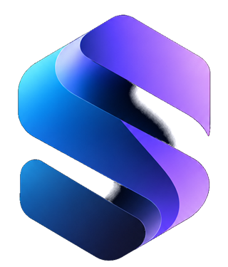

Plan, manage, and connect the workspace
Syncora is the operating layer for daily work: tasks, calendars, teams, files, notes, booking, and permissions — as a desktop app, on a phone over Wi-Fi, or in local development.
What you run in Syncora
One branded workspace for the organization. People see only the pages and actions they are allowed to use.
Workspaces
Every organization gets its own workspace, roles, and branding.
Task engine
Priorities, boards, projects, planner, and progress in one flow.
Schedule
Calendar, meetings, and guest booking links without extra tools.
Access
Page-level permissions, roles, and personal overrides.
Files & notes
Shared files and private or team notes stay with the workspace.
Anywhere
Windows app, same Wi-Fi phone install, or localhost for development.
Install it, then work from anywhere it runs
Windows double-click, phone on the same Wi-Fi, or localhost for development. No hosted Syncora server is required for the shared app copy.